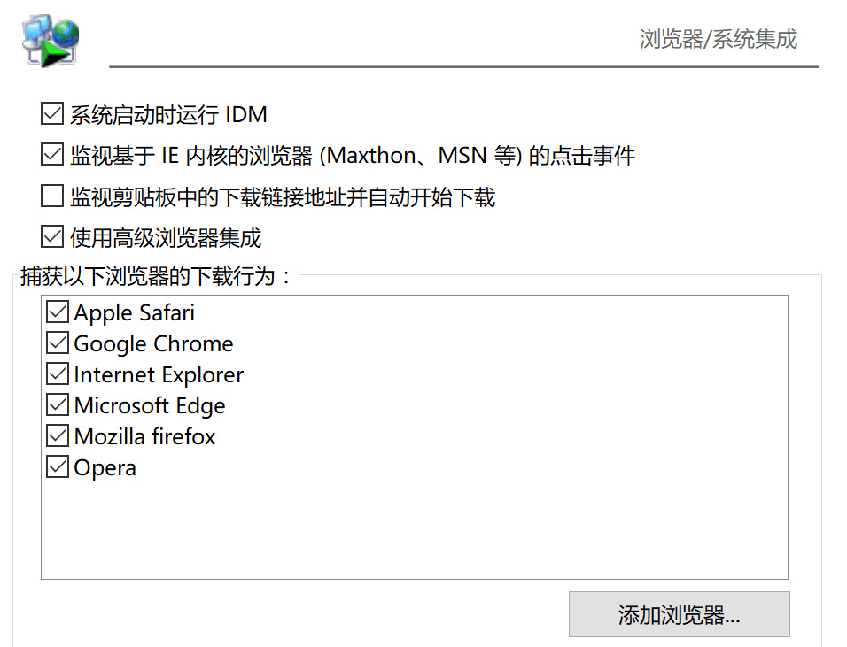
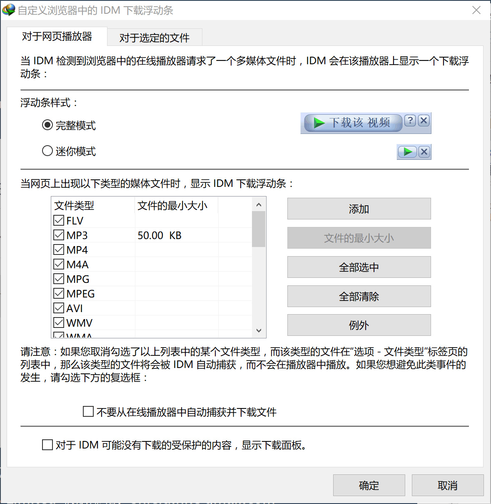

作者：explorer1120
不管是 Mac 还是 Windows 用户，下载工具都是我们使用电脑离不开的必备软件之一，尤其是 Windows 用户，除了迅雷似乎没有太多的选择，而 Windows 上的迅雷又充斥着大量的弹窗广告和没用的插件。那么问题来了，除了迅雷，还有没有其他的选择呢？
Internet Download Manager（以下简称 IDM）是 Windows 平台老牌而功能强大的下载工具，软件提供了下载队列、站点抓取和映射服务器等功能的同时，支持多款浏览器，对于经常有下载需求的 Windows 用户来说，是一个不错的选择。 PS:IDM不支持Mac
IDM 能够在使用浏览器下载文件时自动捕获下载链接并添加下载任务，目前，IDM 的自动捕获功能支持以下常见的主流浏览器： ·Safari ·Chrome ·Firefox ·Opera ·Microsoft Edge ·Internet Explorer 如果你使用的浏览器不在 IDM 的默认支持中，你也可以在软件设置中自定义添加你在用的浏览器，绝对能满足你的需求。
当你播放媒体时，IDM 会自动检测在线播放器发出的多媒体请求并在播放器上显示下载浮动条，你可以直接下载流媒体网站中的视频进行离线观看。
IDM 支持 MP4、MP3、MOV、AAC 等常见音视频格式的检测与下载，你还可以添加更多文件格式以及指定特定站点显示或隐藏软件的下载浮动条等更多自定义操作。
大多数人在下载文件时，都会习惯性地将文件保存到某个固定的位置，等下载完成后再进一步处理，这时候每次下载时要重复在下载工具的保存对话框确认保存位置并点击开始下载就显得非常多余和低效。
IDM 的静默下载功能可以在下载文件时自动最小化下载窗口，在下载过程中如果想进行操作，你可以在开始菜单栏托盘中的 IDM 图标位置定制下载选项。
我们下载了一堆文件时，可能会想要把他们都按照一定的规则归类，但是一个个的归类太慢了，该怎么办呢？这是你可以用我们以后要讲的dropit，还可以用IDM自带的归类功能